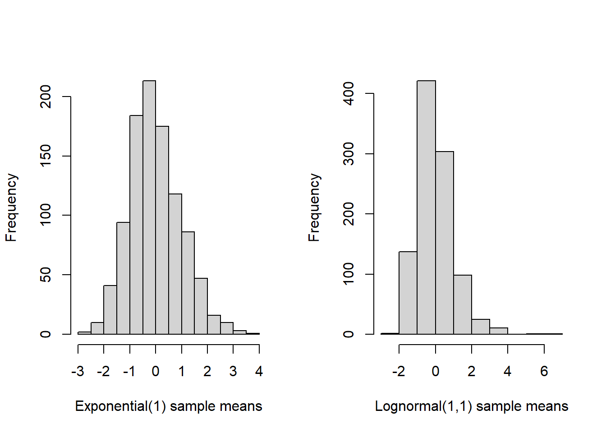

Chapter 11 Sampling Distributions
11.1 Sample Mean
Let \(X_1, X_2, \ldots, X_n\) denote a random sample from a distribution/population with a finite mean \(\mu\) and a finite variance \(\sigma^2\). Denote the sample mean by \(\overline X_n = n^{-1}\sum_{i=1}^n X_i\). According to the Central Limit Theorem,
\[\frac{\overline X_n - \mu}{\sigma / \sqrt{n}} \stackrel{i.d.}{\rightarrow} N(0,1)\]
for large sample size, meaning the distribution of the centered and scaled (standardized) sample mean converges to standard normal. Therefore, for large sample sizes,
\[\overline X_n \stackrel{\cdot}{\sim} N(\mu, \sigma^2/n)\]
We say the approximate/large-sample sampling distribution of the sample mean is Normal.
If \(X_1, X_2, \ldots, X_n\) constitutes a random sample from a Normal population, then the sampling distribution of the sample mean is exactly normal:
\[\overline X_n \sim N(\mu, \sigma^2/n)\quad \text{for all }n,\]
which can be verified using MGFs.
How large is large? For many disributions the CLT will “kick in” for modest sample size, even, say, \(n=50\) is often sufficient. But, ultimately, the number of samples needed in order for the sample mean to be nearly normally distributed depends on the underlying distribution. Very skewed or multimodal distributions may “resist” the CLT much longer than distributions that already are close to normal. Below is a quick Monte Carlo experiment illustrating the CLT, and sample mean sampling distribution, for two distributions: exponential and log-normal.

As a final reminder, note the CLT does not apply to “heavy-tailed” distributions that lack a mean. For example, the Cauchy distribution is very likely to produce extreme values, and, as a result, it has no finite mean. Therefore, the CLT does not apply and it’s unclear what will be the sampling distribution of it’s sample mean. It turns out the sample mean is still Cauchy-distributed—taking the average of Cauchy samples does not reduce uncertainty at all. For an illustration, see the Monte-Carlo-approximated distribution of the sample mean of 50 samples from a Cauchy population:
11.2 Sample Variance
Let \(X_1, X_2, \ldots, X_n\) denote a random sample from a Normal population with mean \(\mu\) and variance \(\sigma^2\). Denote the sample variance by \(S^2_n = \frac{1}{n-1}\sum_{i=1}^n (X_i - \overline X_n)^2\). Next, we will discover the sampling distribution of the (normal) sample variance.
First, we need to establish the fact that if \(Z\sim N(0,1)\), then \(Z^2\) has what is called a Chi-squared distribution, with one “degree of freedom”—this is the parameter of this distribution. This Chi-squared distribution has MGF \(\left(1-2t\right)^{-k/2}\) where \(k\) is the degrees of freedom parameter. It’s corresponding density function is \[f(x) = 2^{-k/2}\left[\Gamma(k/2)\right]^{-1}x^{k/2-1}e^{-x/2},\quad x>0\] and you might recognize this as a Gamma distribution with shape \(k/2\) and rate \(1/2\), so it’s mean is \((k/2)/(1/2) = k\). Ww can establish this fact by the MGF technique. Evaluate the MGF of \(Z^2\) as follows:
\[\begin{align*}
M_{Z^2}(t) &= E(e^{tZ^2}) = \int_{-\infty}^{\infty} e^{tz^2}\frac{1}{\sqrt{2\pi}}e^{-\tfrac12 z^2}dz\\
& = \int_{-\infty}^{\infty} \frac{1}{\sqrt{2\pi}} e^{-\frac{1}{2\frac{1}{1-2t}}z^2}dz\\
& = \sqrt{\frac{1}{1-2t}}\int_{-\infty}^{\infty} \frac{1}{\sqrt{2\pi\frac{1}{1-2t}}} e^{-\frac{1}{2\frac{1}{1-2t}}z^2}dz\\
& = \sqrt{\frac{1}{1-2t}}
\end{align*}\]
where the last inequality follows from the fact the integrand is a normal density function with mean zero and variance \(\frac{1}{1-2t}\) (provided \(t<2\)) so that the integral equals one. This shows \(Z^2\) is Chi-squared distributed with \(1\) degree of freedom.
As we’ve many times, the MGF argument works particularly well with sums of independent random variables. If \(Z_1, Z_2, \ldots, Z_n\) are iid standard normal, then \(\sum_{i=1}^n Z_i^2\) is Chi-squared distributed with \(n\) degrees of freedom. To show this, simply show the MGF of \(\sum_{i=1}^n Z_i^2\) equals \(\left(1-2t\right)^{-n/2}\) using the previous result for \(n=1\), the definition of the MGF, and independence.
Next, we’ll show a linear transformation of the the sample variance has a Chi-squared distribution with \(n-1\) degrees of freedom.
Start by making the linear transformation \[\frac{(n-1)S_n^2}{\sigma^2} = \sum_{i=1}^n \left(\frac{X_i - \overline X_n}{\sigma}\right)^2.\] Here’s the main trick: add and subtract \(\mu\) inside the square in the sum, then expand the square and simplify: \[\begin{align*} \frac{(n-1)S_n^2}{\sigma^2} &= \sum_{i=1}^n \left(\frac{X_i - \mu + \mu - \overline X_n}{\sigma}\right)^2\\ & = \sum_{i=1}^n \left(\frac{X_i - \mu}{\sigma}\right)^2 + 2\sum_{i=1}^n \left(\frac{X_i - \mu}{\sigma}\right)\left(\frac{\mu - \overline X_n}{\sigma}\right) + \sum_{i=1}^n \left(\frac{\mu - \overline X_n}{\sigma}\right)^2\\ & = \sum_{i=1}^n \left(\frac{X_i - \mu}{\sigma}\right)^2 - 2n\left(\frac{\overline X_n - \mu}{\sigma}\right)^2 + n\left(\frac{\overline X_n - \mu}{\sigma}\right)^2\\ & = \sum_{i=1}^n \left(\frac{X_i - \mu}{\sigma}\right)^2 - n\left(\frac{\overline X_n - \mu}{\sigma}\right)^2\\ & = \sum_{i=1}^n \left(\frac{X_i - \mu}{\sigma}\right)^2 - \left(\frac{\overline X_n - \mu}{\sigma/\sqrt{n}}\right)^2 \end{align*}\]
So far, we have shown \[\sum_{i=1}^n \left(\frac{X_i - \overline X_n}{\sigma}\right)^2 = \sum_{i=1}^n \left(\frac{X_i - \mu}{\sigma}\right)^2 - \left(\frac{\overline X_n - \mu}{\sigma/\sqrt{n}}\right)^2.\]
The first term on the right hand side is a summation of \(n\) squares of independent, standard normal r.v.’s \(Z_i = \frac{X_i - \overline X_n}{\sigma}\). Baed on our previous result, this sum must be distributed as Chi-squared with \(n\) degrees of freedom. The second term on the right is also the square of a standard normal random variable, so it must be distributed as Chi-squared with one degree of freedom. Consequently, the sum on the left hand side must be a Chi-squared random variable with \(n-1\) degrees of freedom.
11.2.1 Large-sample sampling distribution of sample variance
If \(X_1, X_2, \ldots, X_n\) is a random sample from a distribution with at least 4 finite moments, then the sample variance \(S_n^2\) is approximately normally distributed for large \(n\). To see this, note \[S_n^2 = \frac{1}{n-1}\sum_{i=1}^n (X_i - \overline X_n)^2 \approx \frac{1}{n}\sum_{i=1}^n Z_i\] where \(Z_i = (X_i - \mu)^2\). The latter expression is a sample average of iid random variables, and, as such, the CLT implies (the centered and scaled transformation of) it has a limiting normal distribution. This reasoning can be made rigorous.
11.3 Sampling distribution of studentized sample mean
Let \(X_1, X_2, \ldots, X_n\) be a random sample from a normal population with mean \(\mu\) and variance \(\sigma^2\); and, let \(\overline X_n\) and \(S_n^2\) denote the sample mean and sample variance, respectively.
Let
\[T_n:=\frac{\overline X_n - \mu}{\sqrt{S_n^2 / n}}\]
denote the “studentized sample mean.” \(T_n\) is the standardized sample mean—\(\overline X_n\) minus \(\mu\) and divided by \(\sqrt{\sigma^2/n}\)—with the true variance replaced by its estimate, the sample variance.
The standardized sample mean has a standard normal distribution (even approximately so for non-normal random samples by the CLT), but the studentized sample mean is not normally-distributed. Rather, the studentized sample mean has a Student’s \(t\) distribution with \((n-1)\) degrees of freedom.
A Student’s \(t\) random variable is defined in the following way: If \(Z\) is standard normal and independent of \(V \sim\) Chi-Squared \((n-1)\), then
\[T:=\frac{Z}{\sqrt{V/(n-1)}}\]
is a Student’s \(t\) random variable with \(n-1\) degrees of freedom.
Rewriting the studentized sample mean, we have \[T_n = \frac{\overline X_n - \mu}{\sqrt{S_n^2 / n}} = \frac{\frac{\overline X_n - \mu}{\sqrt{\sigma^2 / n}}}{\sqrt{(n-1)S_n^2/\{(n-1)\sigma^2\}}} = \frac{Z}{\sqrt{V/(n-1)}}.\] It remains to verify \(\overline X_n\) and \(S_n^2\) are independent, and a sketch of this result is given next.
11.3.1 Part of Student’s Theorem - Indepndence of \(\overline X_n\) and \(S_n^2\)
Let \(Z_1, \ldots, Z_n\) be a random sample of standard normal random variables. Without loss of generality let’s sketch a proof that \(\overline Z_n\) and \(W = \sum_{i=1}^n (Z_i - \overline Z_n)^2\) are independent. Define the matrix \(O_n\) to be the \(n\times n\) matrix with entries defined by: \[For 1 \leq i \leq n-1, \quad o_{ij} = \Bigg\{ \begin{matrix} \frac{1}{\sqrt{i(i+1)}}, &j\leq i \\ -\frac{1}{\sqrt{i(i+1)}}, &j= i+1 \end{matrix}\] and zero otherwise; except that \(o_{nj} = n^{-1/2}\). Then, it can be checked that \(O_n\) is orthogonal, i.e., \(O_n^\top O_n = I_n\), the identity. Next, define the vectors \(Z = (Z_1, \ldots, Z_n)^\top\) and \(Y = O_n Z\). By construction of \(O_n\) we have \[Y^\top Y = Z^\top O_n^\top O_n Z = Z^\top Z = \sum_{i=1}^n Z_i^2.\] And, we also have \[Y_n = \sum_{i=1}^n \frac{Z_i}{\sqrt{n}} = \sqrt{n} \overline Z_n.\] Therefore, \[\sum_{i=1}^{n-1}Y_i^2 = \sum_{i=1}^{n}Y_i^2 - Y_n^2 = Z^\top Z - n\overline Z_n^2 = W.\] So far, we have shown \(\overline Z_n\) is a function of \(Y_n\) and \(W\) is a function of \(Y_1, \ldots, Y_{n-1}\). But, \(Y = O_n Z\) is normally distributed with covariance \(O_n^\top O_n = I_n\). Therefore, \(Y_i\), \(i=1, \ldots, n\), are independent, which implies \(\overline Z_n\) and \(W\) are independent.
11.4 Differences of Sample Means
So far we have considered statistics baed on a single random sample. Now, we’ll consider statistics based on separate random samples from two populations. First, consider a random sample \(X_1, X_2, \ldots, X_{n}\) from a normal distribution with mean and variance \(\mu_X\) and \(\sigma_X^2\) and another random sample \(Y_1, Y_2, \ldots, Y_m\) from a different normal distribution with mean and variance \(\mu_Y\) and \(\sigma_Y^2\).
11.4.1 Standarized difference
The standardized difference of means is given by \[Z = \frac{\overline X_n - \overline Y_m - (\mu_X - \mu_Y)}{\sqrt{\frac{\sigma_X^2}{n} + \frac{\sigma_Y^2}{m}}}\] and follows a standard normal distribution.
11.4.2 Studentized difference, equal variances
Suppose \(\sigma_X^2 = \sigma_Y^2\), and define the pooled sample variance \(S_P^2 = \frac{(n-1)S_X^2 + (m-1)S_Y^2}{n+m-2}\). The studentized difference of sample means is defined by \[T = \frac{\overline X_n - \overline Y_m - (\mu_X - \mu_Y)}{\sqrt{S_p^2(\frac{1}{n}+\frac{1}{m})}}\] follows a Student’s \(t\) distribution with \(n+m - 2\) degrees of freedom.
11.4.3 Studentized difference, unequal variances
When the population variances are unequal a different version of the studentized difference of means is sometimes used: \[T = \frac{\overline X_n - \overline Y_m - (\mu_X - \mu_Y)}{\sqrt{\frac{S_X^2}{n}+\frac{S_Y^2}{m}}}.\] This difference does not have an exact \(t\) distribution, but can be approximated well by a \(t\) distribution with degrees of freedom given by Satterthwaite’s formula: \[df = \frac{\left(\frac{S_X^2}{n}+\frac{S_Y^2}{m}\right)^2}{\frac{1}{n-1}\left(\frac{S_X^2}{n}\right)^2 + \frac{1}{m-1}\left(\frac{S_Y^2}{m}\right)^2}.\] Since the degrees of freedom is an integer-valued parameter the result of this formula is rounded down to the nearest integer.
11.5 Ratios of Sample Variances
As above, consider a random sample \(X_1, X_2, \ldots, X_{n}\) from a normal distribution with mean and variance \(\mu_X\) and \(\sigma_X^2\) and another random sample \(Y_1, Y_2, \ldots, Y_m\) from a different normal distribution with mean and variance \(\mu_Y\) and \(\sigma_Y^2\).
If \(U\sim\) Chi-Squared with df \(n-1\) and \(V\sim\) Chi-Squared with df \(m-1\) and \(U\) and \(V\) are independent, then
\[F := \frac{U/(n-1)}{V/(m-1)}\]
has an F distribution with two degrees of freedom parameters \(df1 = n-1\) and \(df2 = m-1\), often called the numerator and denominator degrees of freedom.
If \(S_X^2\) and \(S_Y^2\) are sample variances, then \[\frac{\frac{(n-1)S_X^2}{\sigma_X^2(n-1)}}{\frac{(m-1)S_Y^2}{\sigma_Y^2(m-1)}} = \frac{S_X^2/\sigma_X^2}{S_Y^2/\sigma_Y^2}\] has an \(F(n-1, m-1)\) distribution.